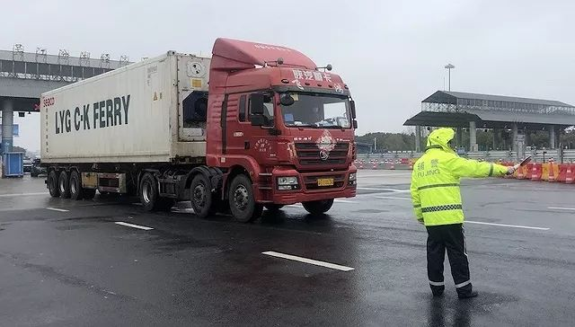
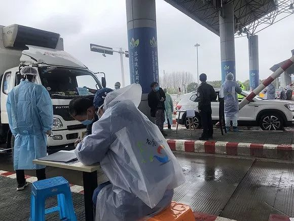
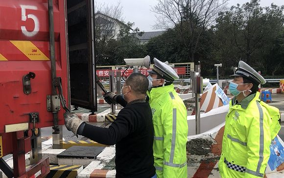

藏在后备箱里进上海，居然成真了！
原文链接 备份链接 澎湃新闻记者 朱奕奕 此前，网上流传有多张照片，称上海查获多起人员藏匿于轿车后备箱以及有人跨越高速公路护栏进入上海金山的情况。经上海警方查证，相关信息不实，本市公安机关在工作中未发现相关情况。（相关报道：藏后备箱进上 …

摄影：方卓然
记者：方卓然 编辑：徐菲
“
在一级响应期间，上海将对没有居住地的、没有明确工作的人员，原则上加强劝返力度，令他们暂缓入沪。
”
“对不起，你在上海没有居住地或落脚点，按照上海的相关规定，我们将对您进行劝返，请您打开双闪灯，开车进入复检区，民警会引导您上高速返回原地。”2月11日上午11点，上海青浦公安分局交警支队高速大队教导员杨海杰守在G50沪渝高速汾湖收费站内，对一个无资格入沪的驾驶员如此说道。
G50沪渝高速是大部分安徽、江西等地长途车辆入沪的首选，在这条高速路上的汾湖收费站位于沪苏交界处，是上海的一大门户。据隧道股份数据，往年该站日均流量22820辆次，今年日均流量约18805辆次。
1月24日下午，为应对新冠肺炎疫情，上海启动重大突发公共卫生事件一级响应机制，此后逐步加紧入沪通道查控。
1月27日14时起，上海把原高速公路114处收费站查控力量全部前移至9处高速公路省界道口公安检查站，实施“逢车必检”，确保没有一个体温超过37.3℃的外来者能开车进入上海。

杨海杰在高速口指挥。
当天，杨海杰被任命为G50沪渝高速公路省界入沪卡点负责人。“从27日接到任务开始，我就做好了24小时驻守的准备，也将女儿和儿子分别送到了岳父母和父母家中，请老人帮忙照看。”杨海杰说道。
从27日至今，杨海杰在汾湖站已驻守了17天。最初，受限于人手不足，G50汾湖站只开放两条车道，但随着返程高峰的来临，站内共9条车道也会根据实际情况进行是否开放的调整。
第一次全部开放9条车道是1月29日。据杨海杰回忆，当天下午，因相邻省市突然宣布关闭境内G50所有的下匝口，造成上海出口车流量骤增，入沪车流最长排队延绵超过5公里。
开放全部车道，就意味着查控压力陡增，为了能做到严格防控，不留遗漏，杨海杰迅速召集了所有正在休息的民警、辅警全员上岗。
“在前置分流疏导岗设置2人，初检拦车岗设9人，复检引导岗设2人，复检区设2人，复检区车辆管理岗设2人，剩余的3人每人负责3根车道，做好初检拦车岗与复检引导岗之间的信息对接。”杨海杰这样分工道。
最终，经过全体民警、辅警5个小时的共同努力，车流最终趋于平稳。
2月1日起，上海新冠肺炎疫情防控工作领导小组要求，所有从上海高速道口、机场、火车站入沪的旅客，都要先在“健康云”APP上填写来沪人员健康登记表。
从沪渝汾湖收费站入沪的外地人占总人数的70%，其中很多外地驾驶员不了解上海的规定，甚至一些人不善于使用手机APP，如何让每一辆车快速通过卡口又成了杨海杰面对的一个难题。

入沪人员手工填写健康登记表。 摄影：方卓然
为了保证有条件网络登记健康信息的驾驶员在手机上登记，杨海杰在前端分流疏导岗位安排了大量的志愿者、辅警和保安，以帮助善于使用手机的驾驶员扫码登记。杨海杰说，“对于实在不会使用手机APP的驾驶员，我们安排他们在收费卡口以手填的方式登记健康信息。”
同时，为了让入沪车辆快速通行，杨海杰还将收费口的9个车道划分为4个外地车入沪车道，3个货车入沪车道，和2个沪牌汽车入沪车道。
“专门开设沪牌车道，是因为通常沪牌车都是有固定住所的上海居民，这样可以减轻民警核查人员是否有入沪资格的工作，更方便管理。”他解释道。
2月10日，在上海市防控工作新闻发布会上，上海市防控工作领导小组、市交通委副主任杨小溪表示，在一级响应期间，上海对没有居住地、没有明确工作的人员，原则上加强劝返力度，令他们暂缓入沪。
在汾湖站，仅2月11日0至10时，杨海杰已劝返了7辆车共计15人。他说，“我们会根据人员的信息，在公安系统内部进行核实，如果来沪人员在上海并没有居住地，我们一律按照相关规定，对其进行严格劝返。”
为了保证每一个被劝返的对象都按原路返回，杨海杰和他的同事们会没收劝返司机的身份证和驾驶证，然后由民警开路引领司机驾驶到离沪的公路，确保劝返的司机无法掉头入沪后，民警再将证件予以返还。
杨海杰表示，为了实行人性化管理，其实上海并没有一刀切死所有没有居住地的人员入沪，“比如针对来上海乘坐飞机去往外地的人，只要他们出示相关的飞机票和证件，并做好登记，我们也会予以放行。”
为保证每人必检，除了测体温、检查是否填写健康信息登记表外，公安民警还要求所有车主打开后备厢或卡车货厢以供检查。杨海杰说，“可能有人会选择藏在后备厢里混进上海，这给我们提了醒，检查的时候不能有死角，所以我们是逢车必开后备厢。”

公安民警检查货车车厢。 摄影：方卓然
除了杨海杰坚守的汾湖收费站之外，包括G2、G15、G40、G50、G60等9处高速公路省界道口公安检查站，都执行了最严格的入沪通道查控。
据上海市公安部门统计，1月22日至2月10日，上海各高速公路道口累计检查车辆160.85万辆、人数298.5万人，送集中隔离观察点1148人，发现并移交体温异常人员408人，劝返疫情重点地区来沪车辆800辆。
未经授权 禁止转载

原文链接 备份链接 澎湃新闻记者 朱奕奕 此前，网上流传有多张照片，称上海查获多起人员藏匿于轿车后备箱以及有人跨越高速公路护栏进入上海金山的情况。经上海警方查证，相关信息不实，本市公安机关在工作中未发现相关情况。（相关报道：藏后备箱进上 …
原文链接 备份链接 摄影：杨舒鸿吉 作者：杨蓉 “ 上海市卫健委新闻发言人郑锦表示，上海有医疗机构3853家，医师7.77万人，护士9.71万人，总体来说可以满足上海疫情防控和医疗服务的需求。 ” 2月11日下午，上海市卫健委新闻发言人郑 …
原文链接 备份链接 - 疫 情 之 下 - 尽管寒风冷冽，病毒无情，但正是这些艰苦的条件，让我们志愿者们的心紧紧依靠在一起。 ” 所有人，身份证出示一下！” 我站在xx高速出口的下风口，大幅度晃动着手里的蓝色文件夹，示意每一辆下高速 …
原文链接 备份链接 李克胜在武汉。图片来源：受访者供图 口述 | 李克胜 整理 | 汪畅 44岁的上海货车司机李克胜，义务承揽运送医疗物资前往武汉的工作，带着7桶泡面，独自踏上千里之路。 返沪后，他马不停蹄，再次踏上赴汉之旅。 他曾接到妻 …
原文链接 备份链接 1988年1月，上海爆发大规模甲型肝炎传染病，最终确诊病例高达31万人，临近的浙江也有7万例，这次甲肝的导火索是食用不洁毛蚶——一种形似蛤蜊的贝类。 32年之后，再次提起这次疫情，每一个老上海人仍记忆犹新，它留给上海 …